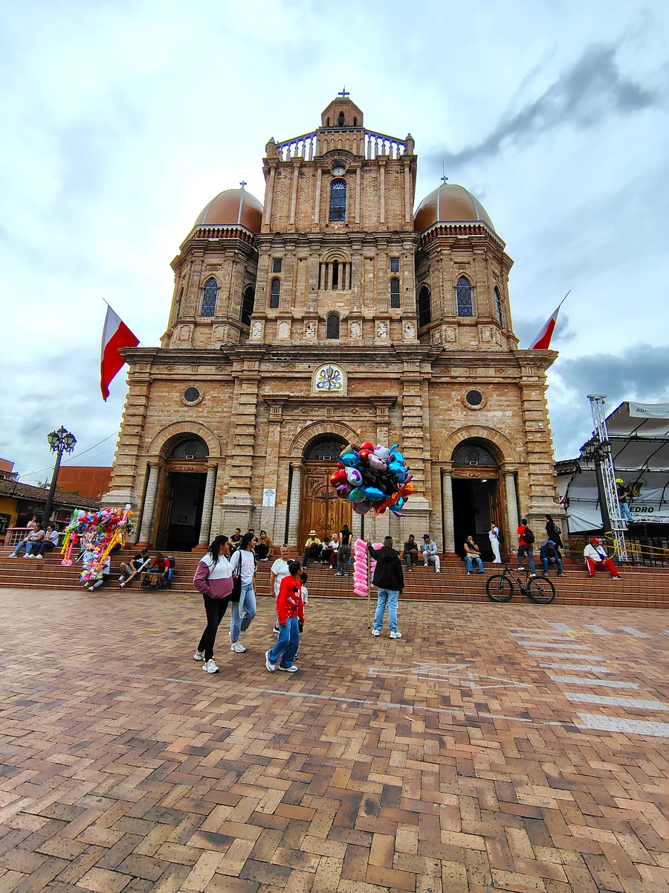
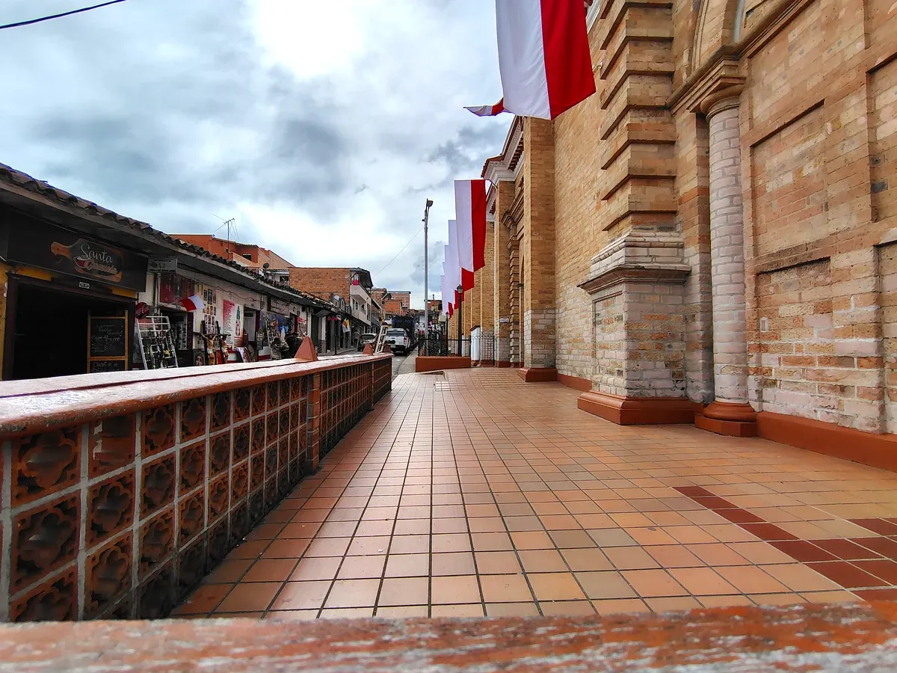
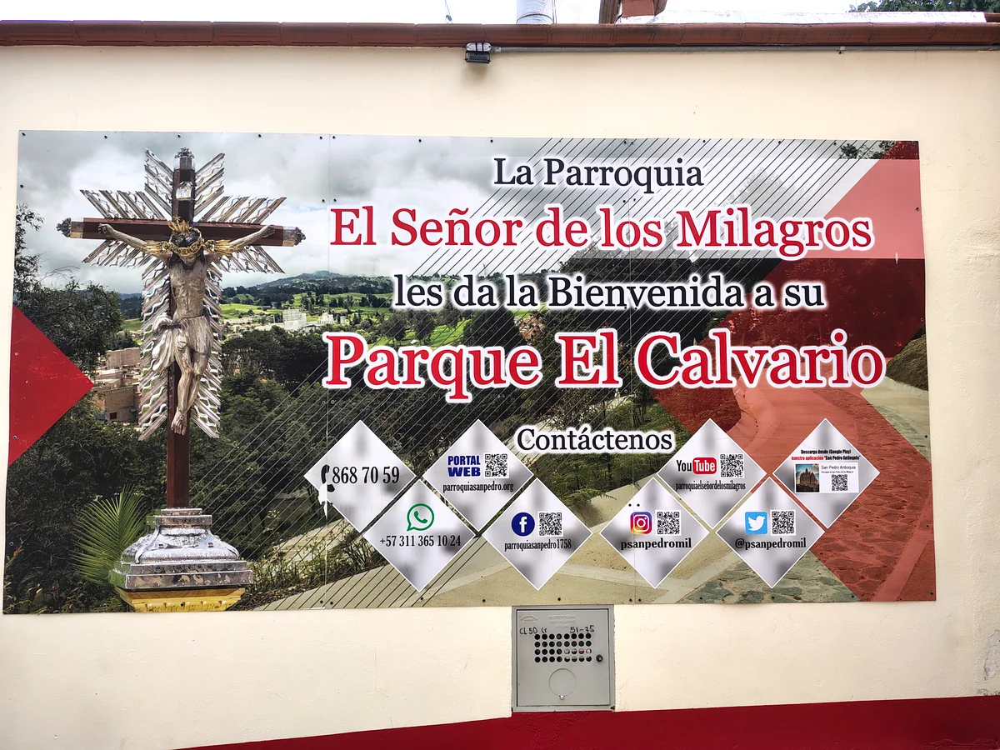
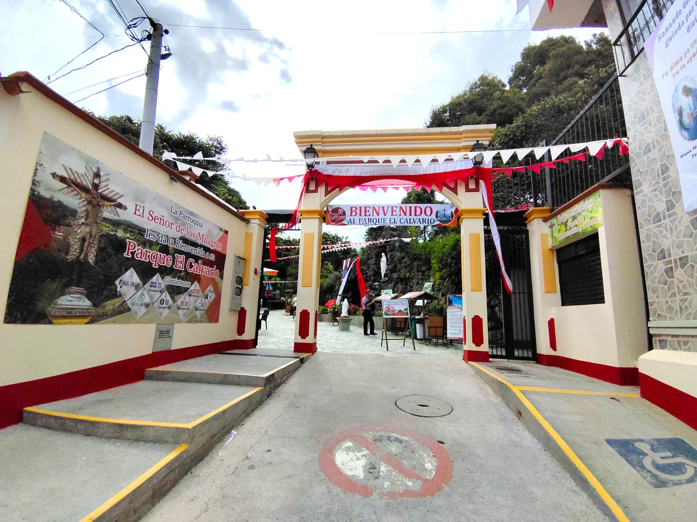
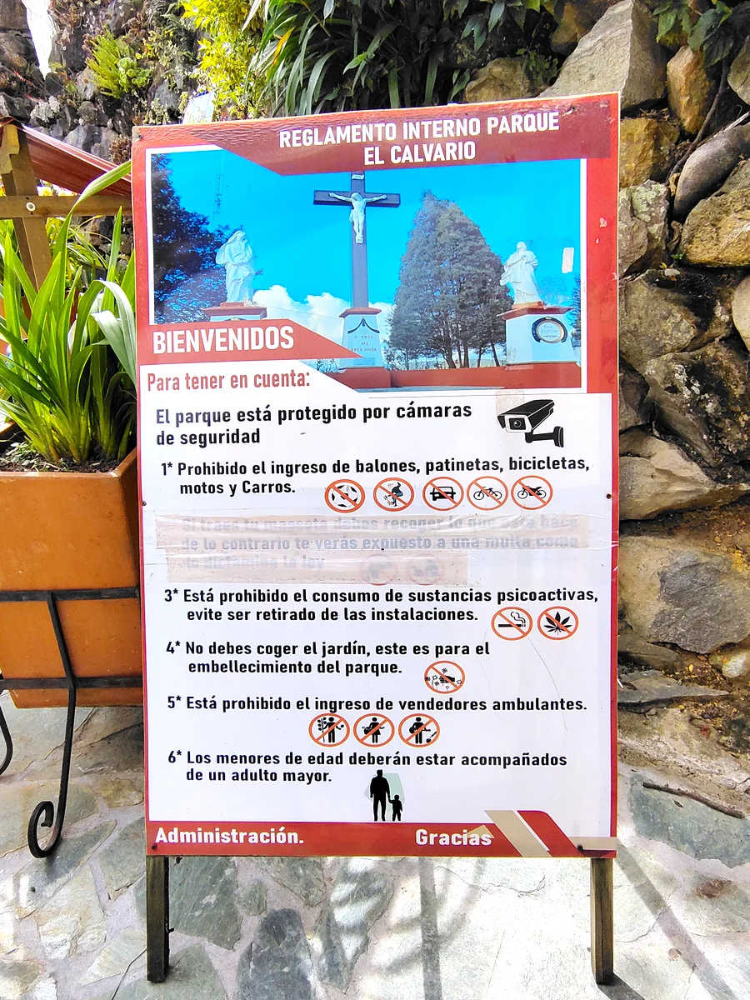
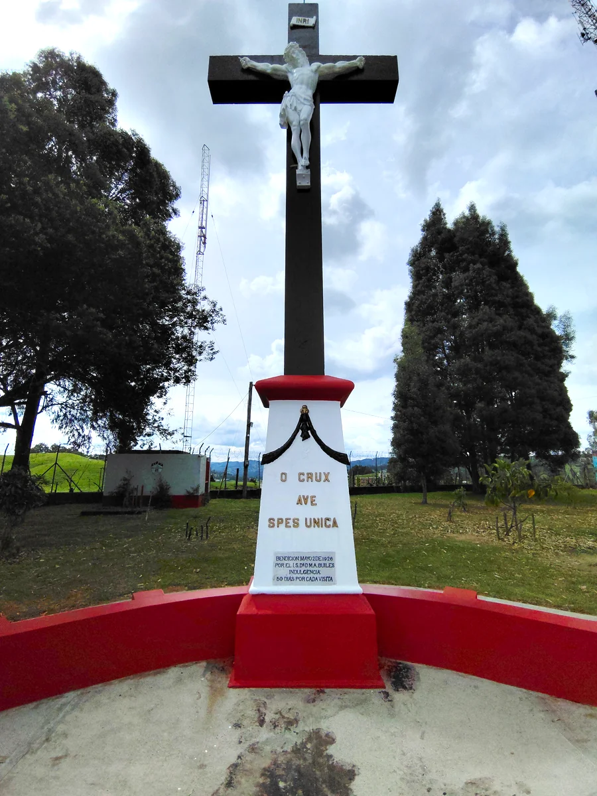
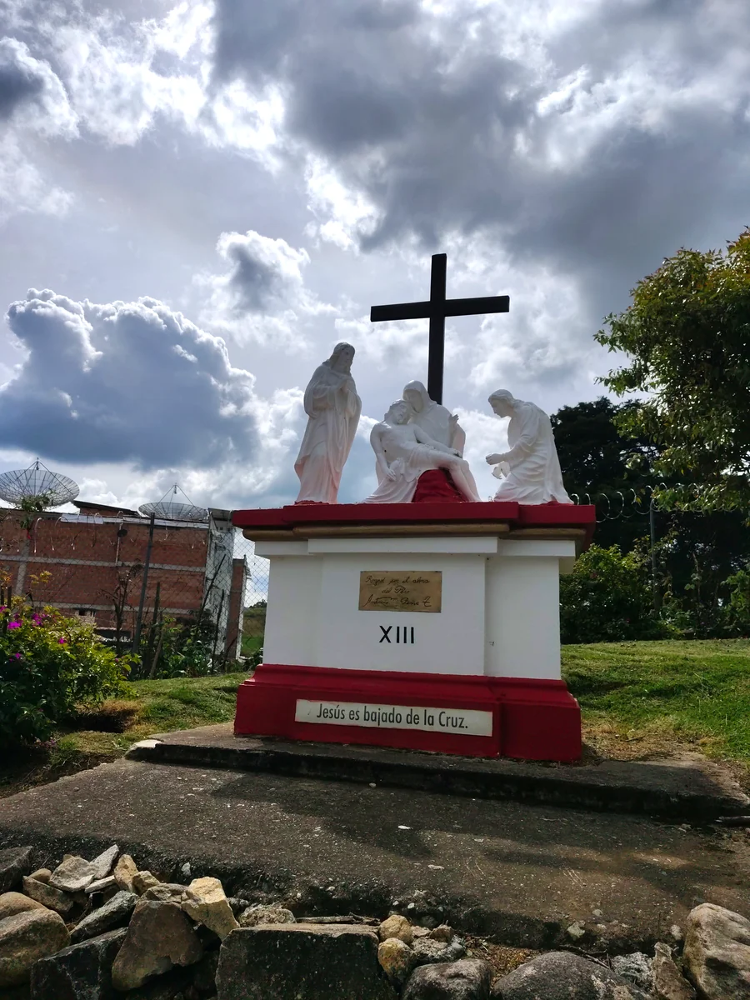
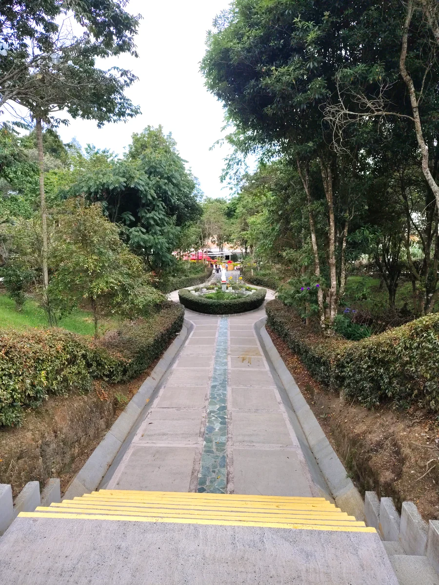
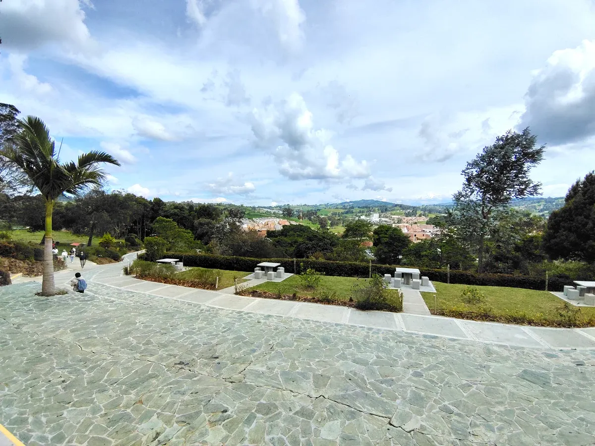

"Dichoso el que logra ver su ciudad con ojos de visitante"

El primero de mayo y el destino, que sabe lo que hace, nos plantó en San Pedro de los Milagros, la Capital Lechera de Antioquia. No podría haber mejor escenario para celebrar el Día del Trabajo: un pueblo donde esa palabra no es un discurso ni un feriado en el calendario, es el mugido de las cuatro de la mañana, es la ladera ordenada palmo a palmo, es el campesino que ya lleva horas trabajando cuando uno apenas está buscando el primer tinto del día. El trayecto desde Medellín ya lo anticipa todo. A medida que uno se aleja de la ciudad y el paisaje empieza a abrirse en potreros y cumbres despejadas, el aire cambia, se vuelve más limpio, más frío, y uno entiende por qué este altiplano norte produce tanta leche: la tierra aquí parece hecha para dar. Vacas en cada loma, fincas que se pierden en la distancia, y ese verde intenso que solo tienen los municipios donde la naturaleza todavía manda. Al llegar al parque principal, la Basílica Menor del Señor de los Milagros te detiene en seco. Imponente, de una escala que uno no espera encontrar en un municipio de montaña, custodia la plaza con esa solemnidad que tienen las iglesias de pueblo cuando las ves de frente por primera vez y entiendes que fueron construidas para durar siglos. A su alrededor, el primero de mayo se celebraba a la manera sanpedreña: sin estridencias, con la plaza llena de gente que se saludaba, familias sentadas en los andenes, niños corriendo sin ningún afán, y ese vaivén pausado que tienen los pueblos cuando están de fiesta sin necesitar demostrarlo.


El Calvario: Un refugio de fe, esmero y sabor.
Subir al Parque El Calvario es, quizás, el ejercicio más honesto de observación que ofrece este viaje.
No es solo un mirador hacia la inmensidad de las montañas; es un sendero trazado por la devoción. A
medida que se asciende, las estaciones del Viacrucis van marcando el ritmo del camino, pequeñas pausas
de piedra y fe que preparan el espíritu para el encuentro final. Al coronar la cima, nos recibe la Gran
Cruz, imponente y serena, custodiando el silencio de la colina y recordándonos por qué este lugar es el
epicentro espiritual de tantos peregrinos.
Lo que hace excepcional este rincón, más allá de lo sagrado, es el cuidado diligente de sus
instalaciones. Se nota el amor de quienes mantienen sus jardines impecables y sus senderos limpios,
permitiendo que la belleza natural dialogue con la mano del hombre. Y como poblar también se hace con el
gusto, dentro del parque nos encontramos con el calor de los emprendedores locales. Es imposible irse
sin pasar por el mercadillo de velas, donde cada llama encendida es una historia, y por supuesto, sin
probar el bocadillo de tomate de árbol. Ese sabor artesanal, único de la región, es el premio perfecto
tras el ascenso; un detalle dulce que nos confirma que en Antioquia, hasta en el rincón más sencillo,
siempre hay un tesoro esperando a ser descubierto.






San Pedro no es un pueblo que te deslumbre de golpe ni te venda un espectáculo. Es de los que te va ganando despacio, con lo cotidiano, con la dignidad silenciosa de su gente y la generosidad sin aspavientos de su tierra. Uno llega como visitante y al rato ya se siente bienvenido, sin que nadie haya tenido que hacer un esfuerzo particular por lograrlo. Eso, en el fondo, es lo más difícil de conseguir y lo más antioqueño de todo.